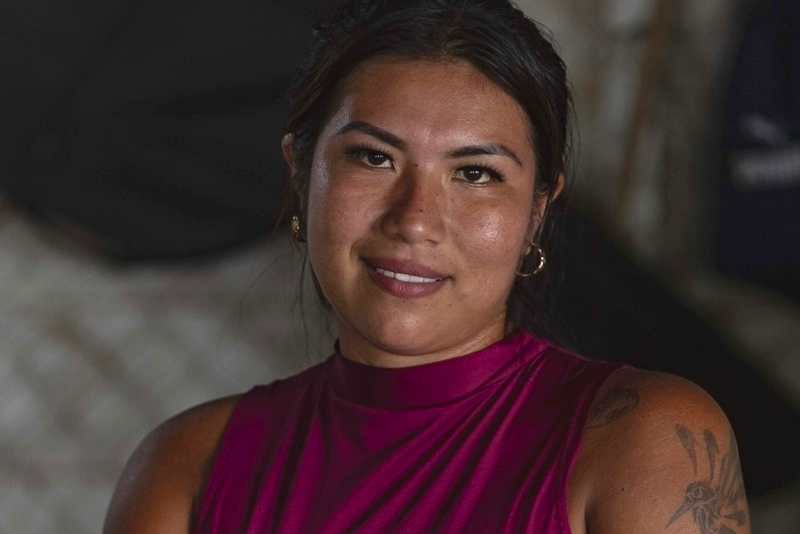
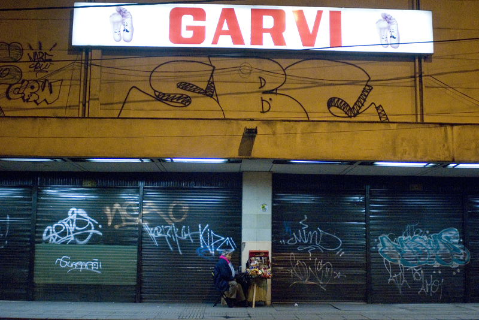
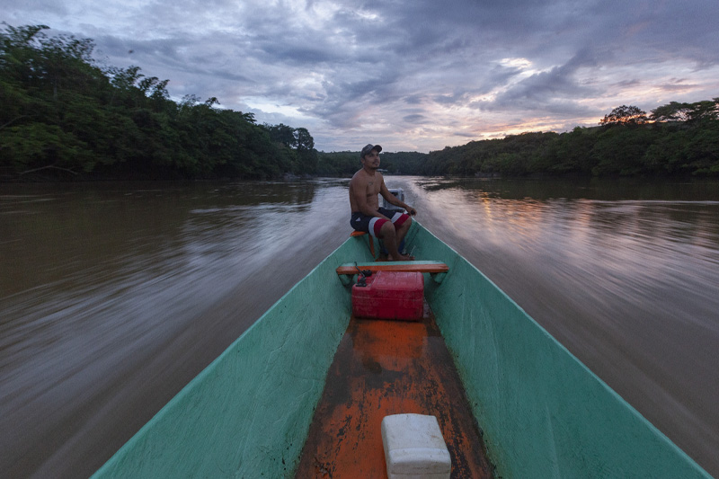
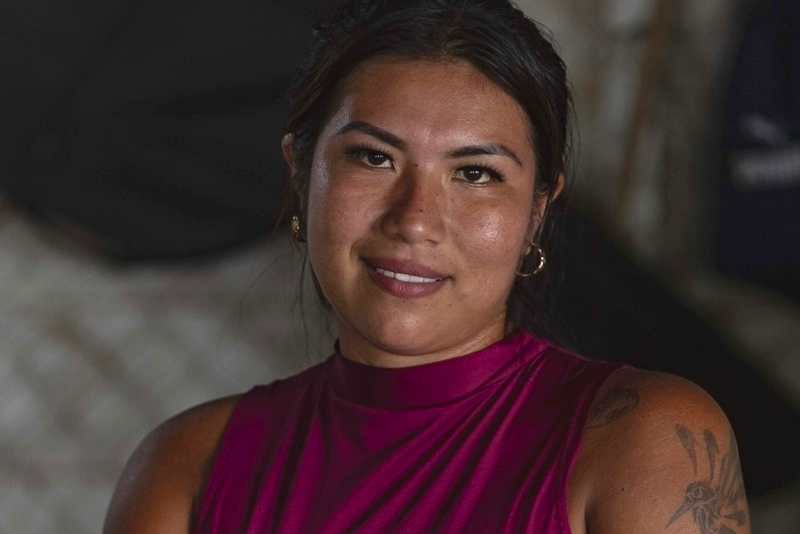
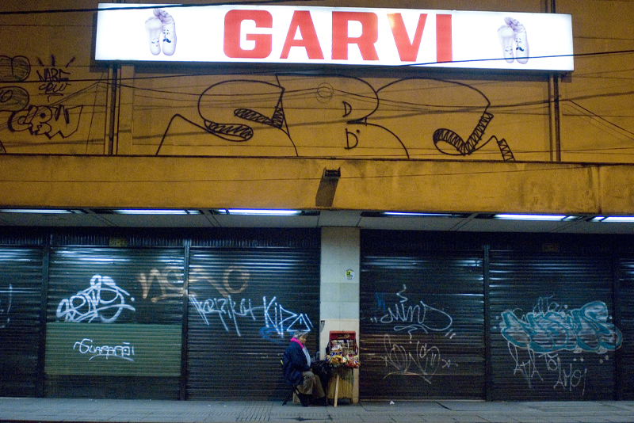
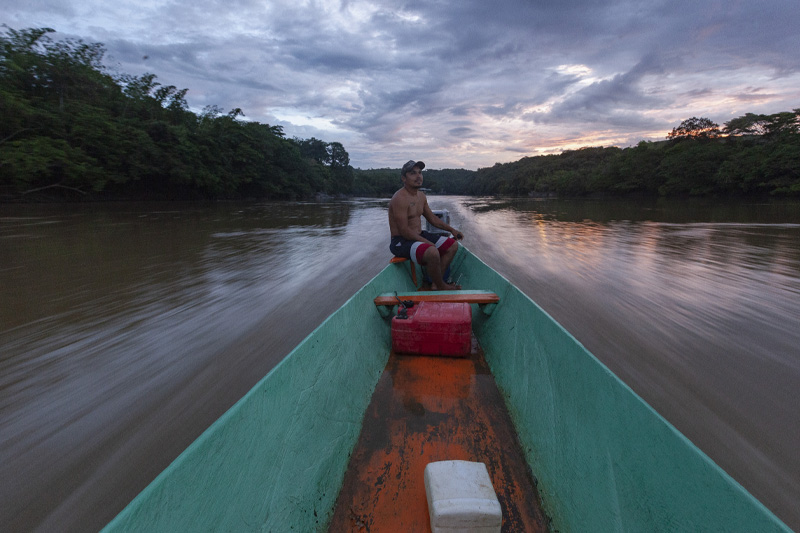

COIT “Centro de Observación e Investigación del Trópico”
En la Corporación Movimiento K apostamos por el rescate, investigación, observación, acción y participación en el trabajo sinérgico y rizomático desde-con nuestro trópico. Somos conscientes de la megadiversidad y de la importancia del recurso hídrico. La propuesta se trata de acercar orillas, sectores, alrededor de seres no humanos; pero también de construir, además de rescatar conocimientos propios, situados, nacidos en las selvas tropicales y especialmente colombianas, distintos a la sabiduría dominante occidental, generando diálogos entre diversas culturas, con el fin de procurar hechos que permitan el rescate de la vida y de la biodiversidad.
El trópico ha sido surcado por diferentes culturas, cada una de ellas con sus distintas formas de relacionarse y aprender de su territorio. Fue gracias a un sabedor indígena que se supo de los beneficios del sauce criollo, de donde se extrajo la aspirina que inició una revolución de la industria farmacéutica. Gracias a esa diversidad biológica tan amplia, el trópico se constituye en un laboratorio vivo para el mundo empresarial y científico, son bastantes los componentes químicos y recursos genéticos del trópico que se usan actualmente y que se usaban desde tiempos ancestrales. No obstante, con la propuesta COIT también se quiere resignificar la biodiversidad y trascender la mirada cosificante-mercantilista; nos enseñan los pensamientos propios de las selvas que existen seres sagrados en los bosques y rituales que tejen equilibrio entre el mundo de los humanos y los no humanos. ¡Construyamos diálogos profundos de investigación y observación desde y con la biodiversidad!

Arte, poesía y pensamiento por la No-Violencia
En la Corporación Movimiento K rescatamos el potencial de las musas de las artes para construir culturas no violentas respetuosas de la vida y la biodiversidad. Las artes no son algo meramente estético, tienen un potencial político, comunicativo, congregan, cohesionan, generan movimiento, llevan algo del sentido del ritual como acto que liga lo divino con lo humano. Thomas Mann, premio Nobel de Literatura, estudioso de las migraciones y los dramas humanos, proponía que “en un país en guerra hasta la música es políticamente incorrecta”, demostrando el potencial relegado de las artes para generar pensamiento.
Si el arte se relaciona con la creación y la memoria, pues en la mitología griega las musas son hijas de Mnemosine (diosa asociada con la memoria); la guerra, como la violencia, se relacionan con la destrucción, el olvido y el terror que paraliza el movimiento (en la mitología griega Fobos “terror” es hija de Ares, dios de la guerra). En la Corporación Movimiento K le apostamos al movimiento creativo que propicie el encuentro de contrarios, como el binomio ciencia-arte, y de aquello que encadene la muerte violenta y criminal, que siguiendo a la doctora en psicología Martha Cecilia Vélez Saldarriaga, “parece haberse amañado en nuestro pueblo, acurrucándose en los jóvenes y adolescentes que podrían ser la esperanza de un futuro diferente”, porque la escisión de los contrarios puede conllevar al caos.

Consultorías y RSA Empresarial – Campo-Ciudad-Campo
La Corporación Movimiento K se preocupa por conectar las empresas con la sociedad y el medio ambiente, por eso nos interesa profundizar en la Responsabilidad Social Empresarial. Además, aprovechando el equipo de profesionales y la confluencia de distintos conocimientos en la Corporación, nos proponemos realizar investigación y acción que consolide apuestas por mejorar la calidad de vida. Es un esfuerzo por crear sinergias entre los sectores privado y público con la sociedad en la “casa común”, como se refirió el Papa Francisco en su encíclica al planeta Tierra. Nos proponemos acercar el campo a la ciudad, resaltando la correlación y simbiosis entre los dos entornos, fomentando un equilibrio entre lo económico, lo social y lo ambiental dentro de las empresas por medio de varias metodologías, entre ellas la Investigación, acción y participación (técnica desarrollada por el sociólogo colombiano Orlando Fals Borda) diseñando y creando hechos que potencien las empresas con una mirada crítica y respetuosa por la vida y la biodiversidad, haciendo uso de las ciencia, las técnicas, las artes y los saberes.
Se trata de generar un efecto “bola de nieve”, no quedar en la actividad sino siempre buscar una “altísima existencia”, tanto en lo empresarial como en lo personal. Lejos de lógicas humanitaristas o de explotación, por el contrario, desde el respeto, fomentar el hacer, con el principio máximo de respeto por la vida y la biodiversidad.
Amor por el pedazo
El pasado 7 de febrero, en la localidad de San Cristóbal, Bogotá, ciudadanos de la comunidad del sector se movilizaron para actuar frente al asedio de las basuras. Con el acompañamiento de las administraciones de conjuntos residenciales aledaños y de la Corporación Movimiento K, se logró el embellecimiento de un espacio público y verde conocido como “La Palomera”, con el propósito de fortalecer el sentido de pertenencia.
Durante décadas, este lugar —ubicado entre conjuntos residenciales, viviendas y colegios— fue utilizado de manera inadecuada como vertedero de basuras, escombros y excrementos de mascotas, hasta el punto de formarse capas de plástico bajo la tierra y convertirse en foco de plagas.
Hoy, “La Palomera” se transforma en “La Huerta de los Polinizadores”, inspirada en la fauna y flora de los Cerros Orientales y de la localidad de San Cristóbal, posiblemente la más verde del sur de la ciudad. Esta iniciativa se inspira en la labor de aves e insectos polinizadores, responsables de la reproducción de las plantas y fundamentales para la alimentación humana.
El mismo 7 de febrero se contó, además, con el acompañamiento de la @policiacomunitaria y la @UAESP. Más allá de la institucionalidad —de la cual aún se requiere mayor compromiso—, se resalta la participación de las personas de carne y hueso que hacen parte de estas entidades. Entre todos se realizó la recolección de residuos, la siembra de especies nativas y ornamentales como lavanda, campanilla, siete cueros, suculentas, chochos y mermelada, esta última símbolo de prosperidad y felicidad para algunos pueblos de Suramérica. Finalmente, se pintó una valla con colores vivos, en alusión al cuidado de la biodiversidad.
Se espera poder organizar próximamente un compartir, un “canelazo”, que celebre la acción colectiva y el respeto por la biodiversidad, como parte del derecho a una vida digna. #vidadigna
https://www.instagram.com/p/DUmD2cpDu-d/?igsh=MW9ocXdmMHh0OWcwbg==

 




